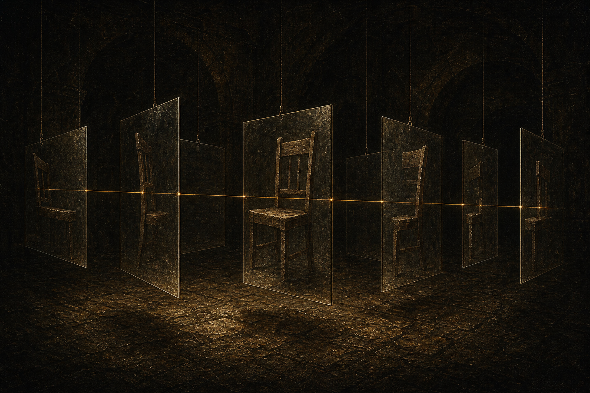
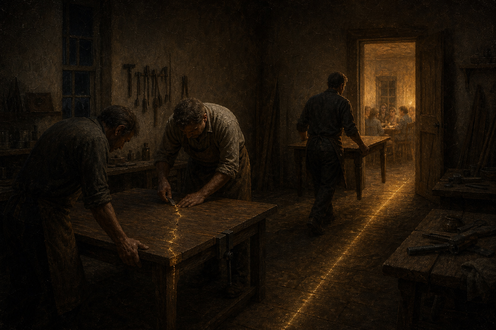

Receive what is given.
Growth begins by meeting reality before preference rearranges it: what is true, what is present, and who is affected.
Apotheosis begins with a demanding idea: the purpose of life is not to be right, but to become. Reality is given. We receive it. We respond. We call the depth and source of that reality Divine Reality, and we measure spiritual growth by what survives the moment: truthfulness, character, repair, and service.
Becoming begins when the cost of admitting we were wrong becomes smaller than the harm caused by staying wrong. Apotheosis is the lifelong practice of letting reality revise us, especially when our private picture of another person no longer matches the life they are actually living.
Explore the philosophyHonesty, humility, compassion, and responsibility are not slogans. They are what reliable correction looks like from the outside. The test is whether later behavior shows a more accurate understanding of the people affected.
Growth begins by meeting reality before preference rearranges it: what is true, what is present, and who is affected.
Do not live permanently inside a version of yourself that reality has already outgrown.
Allow sincere growth to count. No person should be imprisoned forever inside an earlier failure, label, or identity.
Humility is not surrender. No one should be manipulated out of a truth, boundary, identity, or conviction merely to end discomfort.
Our freedom is conditioned, but our responses still enter a world of consequence. Power enlarges the duty to answer for what follows.
After conflict or insight, look at ordinary life. Did behavior become more accurate, patient, accountable, and useful—or did a new story merely close the subject?
Transformation is rarely one dramatic leap. It is built through ordinary choices, made with attention, day after day.

We often return to the same questions at deeper levels. Each honest reflection can reveal a new pattern, a wider perspective, and a better way forward.

We ask what is true, what our present picture leaves out, who bears the consequences, and what must change next. Knowledge matters. Power matters. But neither substitutes for the character required to correct an error before another person has to keep living inside it.
The Pattern of Becoming, three moral responsibilities, and a daily practice for responding truthfully when correction becomes costly.

Awareness gives us enough distance from a thought or feeling to examine it, revise it, and choose what happens next.

Growth becomes real when it changes how people care, repair, forgive, serve, disagree, and show up for one another.

Reach out about membership, support, our philosophy, or building a community around honest growth.
Unity, consciousness, suffering, and the limits of human knowledge—by Michael Silberman.
Why an overwhelming experience deserves serious attention without becoming proof, authority, or an escape from ordinary responsibility—by Michael Silberman.
Freedom within a reality we did not choose—an Apotheosis position paper by Michael Silberman.
Our partnership with Two Worlds Outreach is not just symbolic. It is a practical alliance for housing, healing, and stable community for people moving from crisis toward independence.
We are building a living model that pairs inner work with real-world support, because dignity requires both.
Core beliefs and public services remain open to everyone. Plus and Plus Plus help sustain the mission and include expanded study resources and merchandise discounts.
Visit the Members AreaWeekly Worship
Join Apotheosis Church for readings, teaching, guided discussion, meditation, community reflection, and service planning.
Every Saturday at 7:00 p.m.
672 S. Camino Real, #1, Palm Springs, CA 92264
Open to the public and free to attend. RSVP is required because seating is limited.